1과목: 진로상담
1. 파슨스(F. Parsons)의 특성요인이론에서 자신에 대한 이해를 증진시키기 위한 내용으로 옳은 것을 모두 고른 것은?
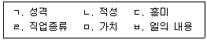
2. 청소년 진로상담자의 역할로 옳지 않은 것은?
3. 홀랜드(J. Holland)의 직업성격유형이론에 관한 설명이다. ( )에 들어갈 용어를 순서대로 바르게 나열한 것은?
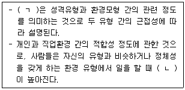
4. 사회인지진로이론(SSCT)에 관한 설명으로 옳은 것을 모두 고른 것은?
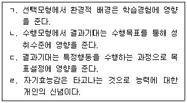
5. 긴즈버그(E. Ginzberg)의 직업선택 3단계 중 시험적(tentative) 단계에 관한 설명으로 옳지 않은 것은?
6. 다음 슈퍼(D. Super)의 진로발달 이론과 관련된 단계는?
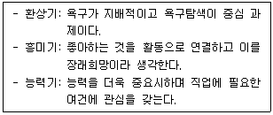
7. 갓프레드슨(L. Gottfredson)의 제한ㆍ타협 이론에 관한 설명으로 옳은 것을 모두 고른 것은?
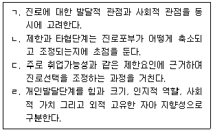
8. 다위스와 롭퀴스트(Dawis & Lofquist)의 직업적응이론에 관한 설명으로 옳은 것은?
9. 윌리엄스(D. Williams)의 진로전환 증진요인으로 옳은 것을 모두 고른 것은?
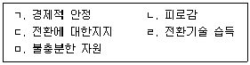
10. 타이드만과 오하라(Tiedeman & O'Hara)의 진로의사결정이론에 관한 설명으로 옳은 것은?
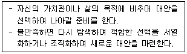
11. 피터슨, 샘슨과 리어든(Peterson, Sampson & Reardon)의 인지정보처리이론의 기본 가정에 관한 설명으로 옳지 않은 것은?
12. 크롬볼츠(J. Krumboltz)의 사회학습 진로이론에 관한 설명으로 옳지 않은 것은?
13. 사비카스(M. Savickas)의 진로적응도에 관한 설명으로 옳은 것은?
14. 여성 진로상담에 관한 설명으로 옳은 것은?
15. 다음 사례와 관련된 진로상담의 과정은?
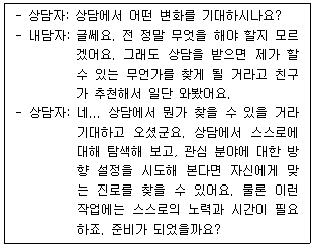
16. 진로가계도(Career Genogram)를 활용한 상담에 관한 설명으로 옳지 않은 것은?
17. 생애진로사정(Life Career Assessment)에 관한 설명으로 옳지 않은 것은?
18. 진로상담에서 사용하는 검사에 관한 설명으로 옳은 것을 모두 고른 것은?
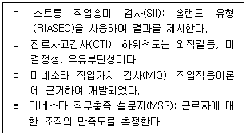
19. 다음 내용이 설명하는 진로상담 검사는?
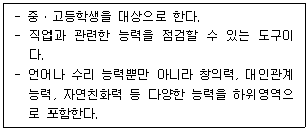
20. 진로정보에 관한 설명으로 옳지 않은 것은?
21. 진로집단상담에 관한 설명으로 옳은 것은?
22. 장애인 진로상담에서 고려할 내용을 모두 고른 것은?
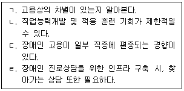
23. 다문화 진로상담에 관한 설명으로 옳지 않은 것은?
24. 진학상담에 관한 설명 중 옳은 것을 모두 고른 것은?
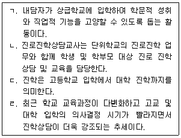
25. 진로상담 과정에서 나타나는 저항에 관한 설명으로 옳은 것은?
2과목: 집단상담
26. 집단상담의 목표 설정에 관한 설명으로 옳지 않은 것은?
27. 다음의 요건을 모두 충족하는 집단 유형은?
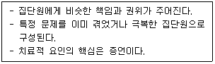
28. 다음과 관련 있는 집단상담의 치료적 요인은?
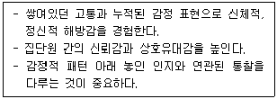
29. 얄롬(I. Yalom)이 제시한 집단상담의 치료적 요인에 해당되지 않는 것은?
30. 집단상담 초기단계에서 집단상담자의 역할로 옳은 것을 모두 고른 것은?
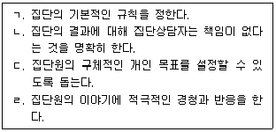
31. 신뢰가 높은 집단의 특징으로 옳지 않은 것은?
32. 실존주의 집단상담에 관한 설명으로 옳지 않은 것은?
33. 다음 설명에 해당하는 집단상담의 이론은?
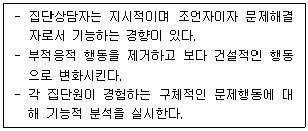
34. 정신분석 집단상담에 관한 설명으로 옳은 것을 모두 고른 것은?
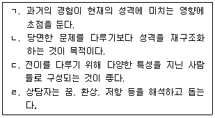
35. 아들러(A. Adler)의 집단상담 기법으로 옳지 않은 것은?
36. 현실치료 집단상담에서 집단상담자의 역할로 옳지 않은 것은?
37. 교류분석 집단상담에 관한 설명으로 옳지 않은 것은?
38. 합리적 정서 행동치료에 근거한 집단상담 기법으로 옳지 않은 것은?
39. 게슈탈트 이론을 적용한 집단상담자의 개입으로 옳은 것을 모두 고른 것은?
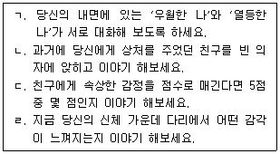
40. 코리(G. Corey)가 제시한 집단상담자의 인간적 자질에 해당되지 않는 것은?
41. 소극적으로 참여하는 집단원(영희)을 위한 집단상담자 반응으로 옳은 것을 모두 고른 것은?
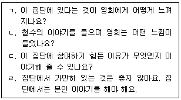
42. 청소년 집단상담의 이점에 관한 설명으로 옳지 않은 것은?
43. 다음 사례에서 집단상담자가 사용한 기법은?
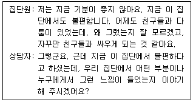
44. 청소년 집단상담에 관한 설명으로 옳지 않은 것을 모두 고른 것은?
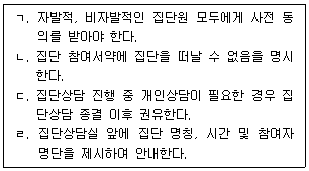
45. 두 명의 상담자가 공동으로 진행하는 집단상담에 관한 설명으로 옳은 것을 모두 고른 것은?
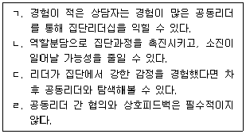
46. 집단상담 평가에 관한 설명으로 옳은 것은?
47. 학교 집단상담 계획에 관한 설명으로 옳지 않은 것은?
48. 청소년 집단원의 특징에 관한 설명으로 옳지 않은 것은?
49. 다음에 해당하는 집단의 유형은?
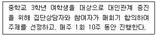
50. 청소년 집단상담과 성인 집단상담의 특성을 설명한 것으로 옳은 것을 모두 고른 것은?
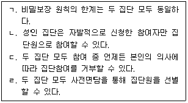
3과목: 가족상담
51. 보웬(M. Bowen)의 가족상담이론에 관한 설명으로 옳은 것은?
52. 사티어(V. Satir)의 가족상담 이론에 관한 설명으로 옳은 것을 모두 고른 것은?
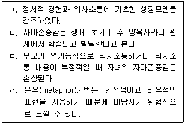
53. 부모간 폭력이 있는 가정에서 성장한 청소년 자녀에게 나타날 수 있는 심리적 어려움에 해당하지 않는 것은?
54. 사티어(V. Satir)의 의사소통 및 대처유형에 관한 설명으로 옳은 것은?
55. 해결중심 단기 가족상담에 관한 설명으로 옳지 않은 것은?
56. 개인상담과 비교한 가족상담의 특징으로 옳은 것은?
57. 가족상담의 개념에 관한 설명으로 옳은 것을 모두 고른 것은?
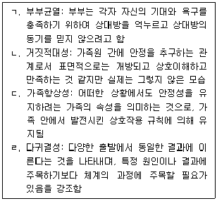
58. 다음 사례를 진행하면서 상담자가 취할 행동으로 옳지 않은 것은?
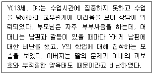
59. 다음 상담자 진술은 어떤 가족상담기법의 예인가?
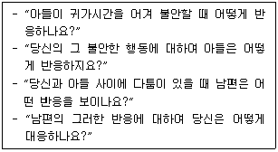
60. 해결중심 단기 가족상담의 질문기법과 그 예로 옳지 않은 것은?
61. 가족생활주기에서 청소년 자녀가 있는 가족의 특성에 관한 설명으로 옳은 것을 모두 고른 것은?
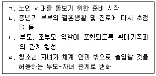
62. 가족체계이론에 관한 설명으로 옳지 않은 것은?
63. 다음 사례에 적용할 수 있는 가족상담 모델과 개입방법의 연결로 옳지 않은 것은?
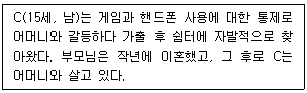
64. 이야기치료의 기본 전제에 해당하는 것을 모두 고른 것은?
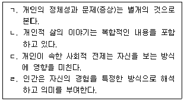
65. 가족상담사의 윤리적 행동으로 옳지 않은 것은?
66. 전략적 가족상담에 관한 설명으로 옳지 않은 것은?
67. 이야기치료에서 사용하는 기법으로 옳지 않은 것은?
68. 다음에서 설명하는 가족상담의 기법은?
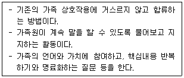
69. 다음 사례에 적용할 수 있는 가족상담 모델과 개입방법의 연결로 옳지 않은 것은?
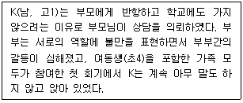
70. 가족생활주기에 관한 설명으로 옳지 않은 것은?
71. 다음 가족상담기법의 예로 옳은 것을 모두 고른 것은?
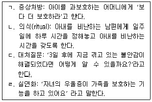
72. 가족사정에 관한 설명으로 옳지 않은 것은?
73. 가족상담의 초기과정 작업으로 옳지 않은 것은?
74. 다음 가계도에서 IP(Identified Patient)의 가족역동에 관한 설명으로 옳지 않은 것은?
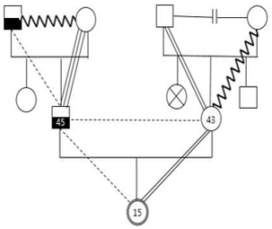
75. 구조적 가족상담 이론에서 가족의 재구조화에 관한 내용으로 옳지 않은 것은?
4과목: 학업상담
76. 학습전략의 범주 중 동기조절에 관한 설명으로 옳은 것을 모두 고른 것은?
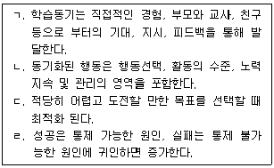
77. 학습문제의 원인 중 '낮은 이해력'에 관한 설명으로 옳은 것을 모두 고른 것은?
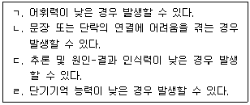
78. 학습부진 및 유사개념을 변별적으로 사용할 때 각각의 개념에 관한 설명으로 옳은 것은?
79. 로크와 라뎀(Locke & Lathem)의 목표설정이론에서 동기향상을 위한 조건을 모두 고른 것은?
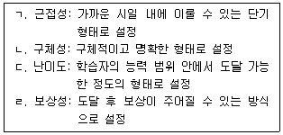
80. 학습자 개인에게 영향을 끼치는 환경에 관한 설명으로 옳지 않은 것은?
81. 학업성취의 인지적 요인에 관한 설명으로 옳지 않은 것은?
82. 다음에 해당하는 학습전략 프로그램의 주제는?
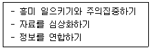
83. 학습시간 관리전략에 관한 설명으로 옳은 것을 모두 고른 것은?
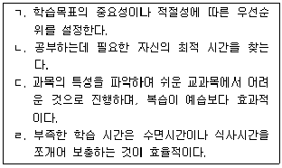
84. 학업적 미루기 대처전략에 관한 내용으로 옳지 않은 것은?
85. 주의력결핍과잉행동장애(ADHD) 아동 상담에서 강화활동 관리 프로그램에 관한 설명으로 옳지 않은 것은?
86. 토마스와 로빈슨(Tomas & Robinson)이 제시한 PQ4R 각 단계의 설명이 옳은 것은?
87. 맥키치(W. McKeachie)가 제시한 학습전략 중 초인지 전략에 해당하는 것은?
88. 노트필기 전략에 관한 설명으로 옳은 것을 모두 고른 것은?
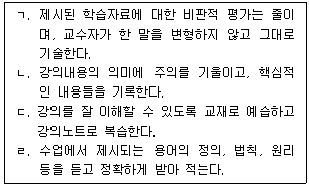
89. 학업 관련 호소문제 유형으로 옳은 것을 모두 고른 것은?
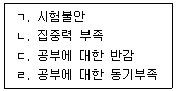
90. DSM-5의 주의력결핍과잉행동장애(ADHD) 진단의 부주의 증상에 해당하지 않는 것은?
91. 학업 관련 표준화된 심리검사 선정 시 유의사항으로 옳은 것을 모두 고른 것은?
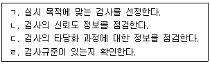
92. 학업상담의 절차 중 다음이 설명하는 것은?
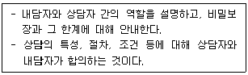
93. 학습동기이론에 관한 설명으로 옳지 않은 것은?
94. 캔달과 브라스웰(Kendall & Braswell)이 제시한 주의집중력 향상을 위한 자기교시 훈련 단계를 순서대로 바르게 나열한 것은?
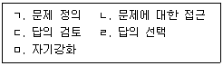
95. 학습부진 영재아에 관한 설명으로 옳지 않은 것은?
96. 와이너(B. Weiner)의 귀인요소와 차원과의 연결이 옳은 것은?
97. 발표불안을 증가시키는 원인으로 옳은 것을 모두 고른 것은?
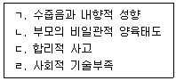
98. 다음 사례의 시험불안 개입방법으로 옳은 것은?
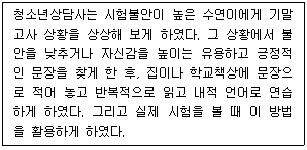
99. 학습동기의 개인지향적 원인론에 관한 설명으로 옳지 않은 것은?
100. 다음 개념을 제시한 학자로 옳은 것은?
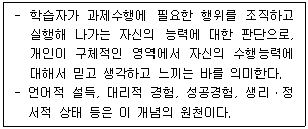